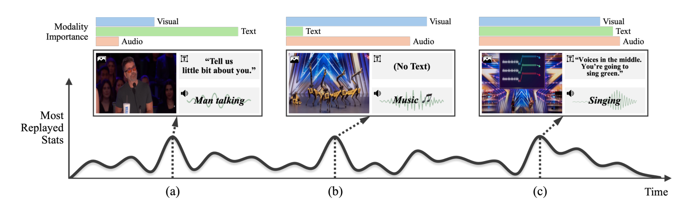
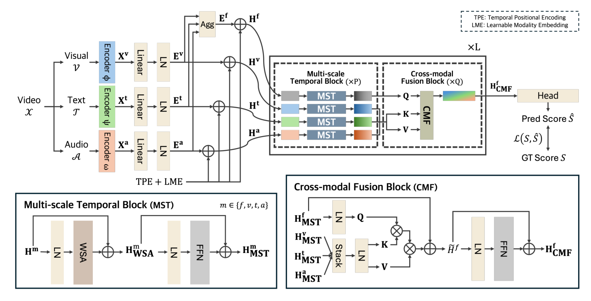
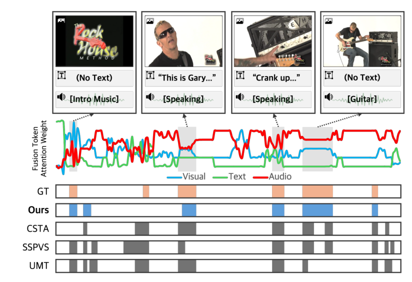
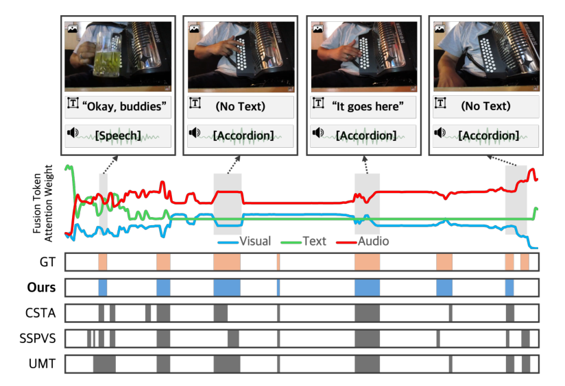
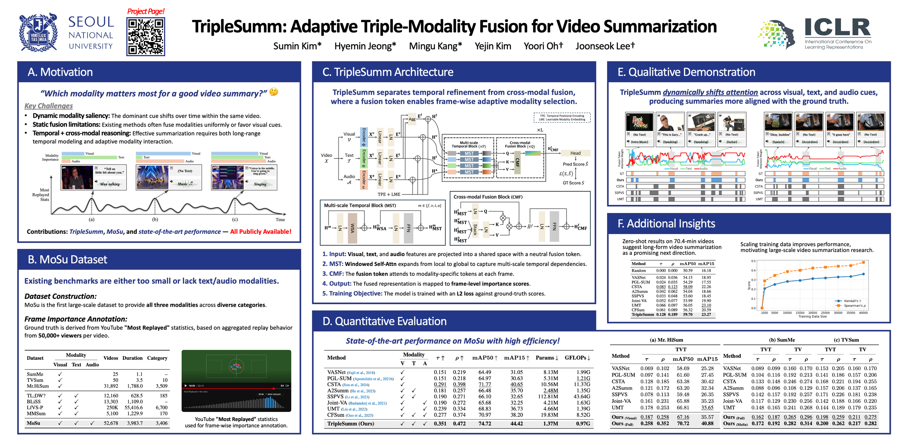

Interactive DemoWatch TripleSumm summarize real videos
All examples below are from the test split of our MoSu benchmark — none were seen during training. As the video plays, the charts follow along in real time: the model's predicted importance against the ground truth (aggregated from 50,000+ real viewers), the selected summary segments, and how the model dynamically shifts its attention across visual, text, and audio at every second. Tap anywhere on the charts to seek, and toggle Summary only to watch just the 15% the model would keep.
Choose a video — every one is a genuine test-set prediction:
MotivationThe most informative modality changes every moment
Human comprehension of video is inherently multimodal — yet most video summarization models look at pixels alone, or fuse modalities with a fixed recipe. In a real video, the cue that matters changes from moment to moment: when a judge speaks, the transcript carries the meaning; when the performance starts, visuals and audio take over.

Static fusion fails
Standard self- or cross-attention treats modalities uniformly or anchors on vision, collapsing when non-visual cues dominate the content.
Two orthogonal patterns
Summarization needs intra-modal temporal reasoning (what changed over time?) and inter-modal reasoning (which sense matters now?) — best learned separately.
No trimodal benchmark
No public dataset offered visual + text + audio with reliable importance labels at scale — so we built one.
The MoSu DatasetThe first large-scale trimodal summarization benchmark
MoSu (Most Replayed Multimodal Video Summarization) pairs in-the-wild YouTube videos with YouTube's Most Replayed statistics — frame-level importance distilled from the watch behavior of at least 50,000 viewers per video. Every video comes with synchronized CLIP visual, RoBERTa text, and AST audio features at 1 feature per second.
| Dataset | Visual | Text | Audio | Videos | Hours |
|---|---|---|---|---|---|
| SumMe | ✓ | – | – | 25 | 1.1 |
| TVSum | ✓ | – | – | 50 | 3.5 |
| Mr.HiSum | ✓ | – | – | 31,892 | 1,788 |
| TL;DW? | ✓ | ✓ | – | 12,160 | 629 |
| BLiSS | ✓ | ✓ | – | 13,303 | 1,109 |
| MMSum | ✓ | ✓ | – | 5,100 | 1,230 |
| MoSu (ours) | ✓ | ✓ | ✓ | 52,678 | 3,984 |
Existing benchmarks are either tiny, visual-only, or bimodal — MoSu is the first to provide all three key modalities at scale.
MethodRefine in time, fuse across modalities
TripleSumm interleaves two purpose-built blocks. The Multi-scale Temporal block (MST) refines each modality stream with windowed self-attention whose window grows local → global across layers, capturing subtle transitions without losing the overall narrative. The Cross-modal Fusion block (CMF) lets a dedicated fusion token cross-attend to the visual, text, and audio tokens of each frame — its attention weights are the per-frame modality importances you see in the demo above.

🪟 Multi-scale temporal
Windowed self-attention with local-to-global schedule (w = 5, 15, 45, N) beats constant windows and full self-attention — at O(w·N) cost.
🎛️ Dynamic per-frame fusion
A neutral fusion token queries all three modalities each second, avoiding the visual bias of asymmetric cross-attention. Dynamic > global > static fusion in ablations.
🪶 Robust & tiny
Gracefully degrades when modalities are missing, and reaches SOTA with only 1.37M parameters / 0.97 GFLOPs — 8× smaller than CSTA.
ResultsState of the art on four benchmarks
On MoSu, TripleSumm outperforms every unimodal and multimodal baseline by a wide margin on all metrics — while being the smallest model in the comparison. It also sets the state of the art on Mr.HiSum, SumMe, and TVSum, and generalizes zero-shot to 70-minute long-form videos.
| Method | Modality | τ ↑ | ρ ↑ | mAP50 ↑ | mAP15 ↑ | Params ↓ |
|---|---|---|---|---|---|---|
| VASNet | V | 0.151 | 0.219 | 64.49 | 31.05 | 8.13M |
| PGL-SUM | V | 0.151 | 0.218 | 64.97 | 30.63 | 5.31M |
| CSTA | V | 0.291 | 0.398 | 71.77 | 40.65 | 10.56M |
| A2Summ | V+T | 0.181 | 0.257 | 66.48 | 35.70 | 2.48M |
| SSPVS | V+T | 0.190 | 0.271 | 66.10 | 32.65 | 112.81M |
| Joint-VA | V+A | 0.190 | 0.272 | 65.68 | 32.25 | 4.21M |
| UMT | V+A | 0.239 | 0.334 | 68.83 | 36.73 | 4.66M |
| CFSum | V+T+A | 0.277 | 0.374 | 70.97 | 38.20 | 19.83M |
| TripleSumm (ours) | V+T+A | 0.351 | 0.472 | 74.72 | 44.42 | 1.37M |
Comparison on the MoSu test set. τ: Kendall's tau, ρ: Spearman's rho against Most-Replayed ground truth.
+21% τ over the best baseline
0.351 vs 0.291 (CSTA) on MoSu — the gap holds on Mr.HiSum (0.258 vs 0.178) and on human-annotated SumMe / TVSum.
Every modality counts
V+T+A > every bimodal pair > every single modality in ablations — evidence of a genuinely synergistic fusion, not a visual crutch.
Zero-shot on hour-long videos
Trained on ≤8-minute clips, TripleSumm still leads all baselines on 70-minute unseen videos (τ 0.128 vs 0.083 next best).
Qualitative: the model knows which sense to trust
The fusion token's attention (middle curves) tracks content with human-like intuition: speech segments pull attention to text, performances to audio — with no supervision on the weights themselves.


PosterOne-page overview
Pinch or scroll to zoom · drag to pan · double-tap to reset · open PDF ↗

CitationBibTeX
@inproceedings{kim2026triplesumm,
title = {TripleSumm: Adaptive Triple-Modality Fusion for Video Summarization},
author = {Sumin Kim and Hyemin Jeong and Mingu Kang and Yejin Kim and Yoori Oh and Joonseok Lee},
booktitle = {The Fourteenth International Conference on Learning Representations},
year = {2026}
}